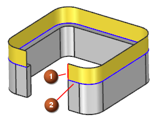
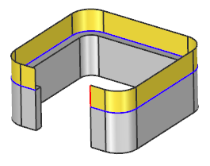

Swept enhancement - Split Output along Guide
What is it?
With the Swept command, in cases where you have one guide per one section, you can now specify that the swept feature be split into the same number of faces as there are segments found along its input guide string.
|
 |
Standard Swept feature (in yellow) created on the tangent edges of an extruded body
|
|
 |
The same Swept feature with the Split Output along Guide option selected. |
Prior to this enhancement, using the Swept command always created a single face regardless of the number of segments on the input guide string.
Why should I use it?
Use the new Split Output along Guide option when you want the topology of a Swept feature to match the segmentation of its guide string.
Where do I find it?
|
Application |
Modeling and Shape Studio |
|
Prerequisite |
Available only in cases of one guide string per one section string. |
|
Toolbar |
Surface→Swept |
|
Menu |
Sweep→Swept |
|
Location in dialog box |
Settings group |